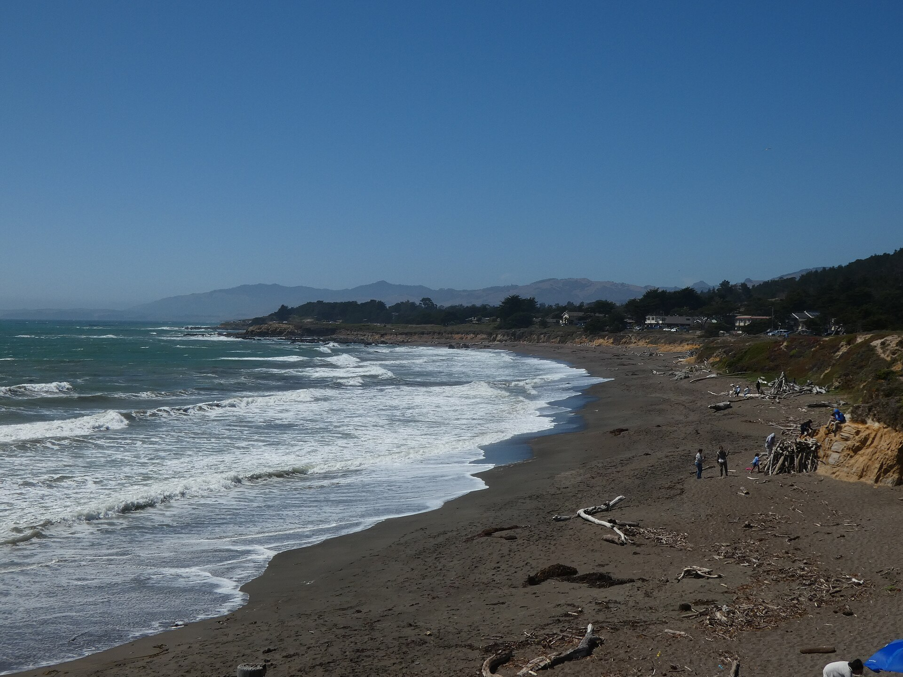
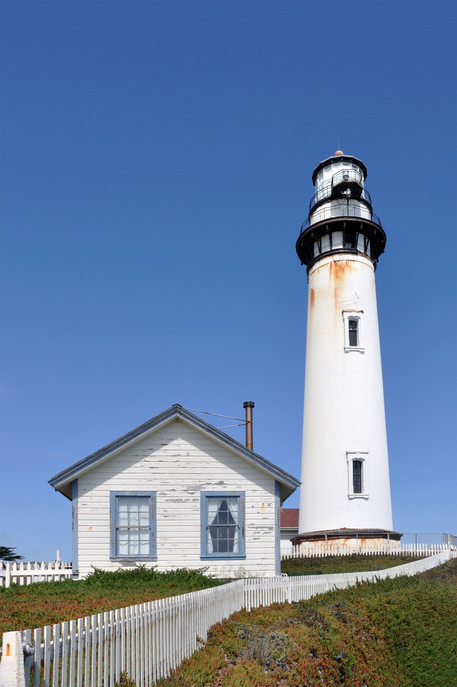
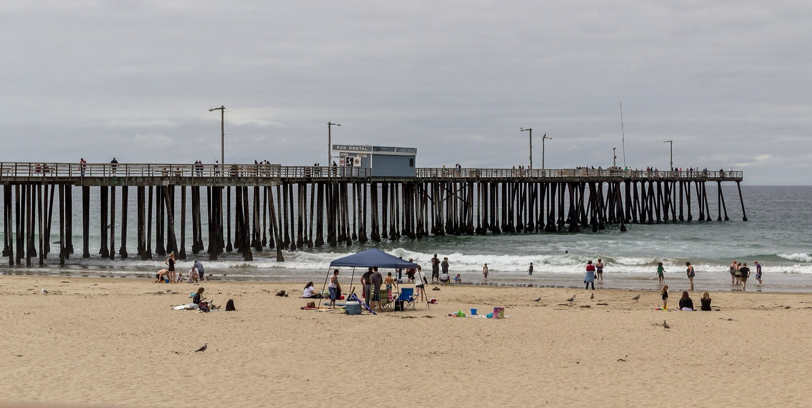

DAY 2 · 12:45
DAY 2 · 12:45
CALIFORNIA HIGHWAY 1 · INITIAL PLAN
Three days.
One wild coast.
三个人，一辆 Tesla，从 Stanford 沿海岸一路向南。穿过灯塔、Monterey 与 Big Sur，在 Pismo Beach 抵达这次旅行的南端。
3DAYS
≈650MILES
2HOTELS
3+1CHARGES
ROUTE OVERVIEW
南端选择 Pismo，
把时间留给风景。
不硬塞 Santa Barbara 或 LA，换来第二天可以晚起、完整穿越 Big Sur，以及第三天在合理晚间返回 Stanford。所有时间都包含初步停车和交通缓冲。
沿海向南US-101 北返
DAY 2 · 12:45WHY PISMO?
路线真正可执行
如果第二晚住 Santa Barbara，Day 2 会在深夜抵达；Day 3 再北返也会变成纯赶路。Pismo 是舒适度与景点密度的平衡点。
ENERGY STRATEGY
Big Sur 前必须充足
进入 Big Sur 前目标 ≥90%。如果 Tesla 预测到达 Pismo 低于 15%，先在 Monterey 补电；出 Big Sur 后立刻在 Pismo 充电。
TRAFFIC REALITY
Monterey Car Week
8 月 12 日正值 Car Week。Pacific Grove、Carmel、Monterey 的停车与道路均留额外缓冲；付费车库优先。
CHINESE TRAVEL COMMUNITY PICKS
小红书高频候选，
但不把行程塞爆。
公开可检索的中文攻略反复提到这些地点。我们用官方页面核对后，把它们做成“替换菜单”：主计划里的 Bixby、McWay 与象海豹保留，其余只在现场时间和停车条件允许时替换。
已纳入可替换不建议硬塞


Day 2 · 不建议硬塞
Pfeiffer Beach
紫沙与 Keyhole Arch 很上镜，但窄路进出、排队和停车会吃掉约 90 分钟。只有当日 08:30 前出发，才替换 River Inn 午餐停留。
官方区域说明 ↗

Day 1 · Car Week 慎选
Carmel-by-the-Sea
白沙滩与小镇很适合散步，但 8 月 12 日停车压力最高。若特别想去，就替换 Lovers Point + Cannery Row，并“停一次、全程步行”。
官方停车建议 ↗
Day 2 · 日落快停
Moonstone Beach
Cambria 海边木栈道适合 15–20 分钟伸展。只有 Robin’s 提前结束且仍有日光时加入；晚点就直接去 Pismo 充电。
官方目的地页 ↗现场决策：候选点只能“一进一出”替换原行程；不能叠加。你是全程唯一驾驶者，Tesla 电量、道路状态和你的体力优先于打卡。

01
WEDNESDAY · AUG 12
Stanford to
Monterey Coast
≈165 mi≈4h10 drivingNight: Salinas
1h25–1h40
SCENIC STOP · 30 MIN
Pigeon Point Lighthouse
免费停车；在灯塔外部观景区轻松拍照。日间区域 08:00–日落，游客中心 10:00–16:00（视人员安排）。
导航到停车场 ↗12:05
30 min
COAST STOP · 60 MIN
Lovers Point, Pacific Grove
沿 Ocean View Blvd 找合法路边位或小型停车区，轻松看海拍照。Car Week 当天最多花 15 分钟找位，满位即启用附近替代点。
打开地图 ↗1h35±
EASY STROLL · 80 MIN
Cannery Row 海边散步
导航 Cannery Row Parking Garage（601 Foam St），不要依赖路边车位；在商店和海岸附近自由活动，不安排长距离路线。
打开车库 ↗15 min
19:30
SUPERCHARGE · 25–30 MIN
Monterey · Del Monte Center
1410 Del Monte Center · 14 枪 · 最高 250 kW · 24/7。提前导航预热，充至约 90%。
打开充电站 ↗90%
CHECK-IN · NIGHT 1
Courtyard Salinas Monterey
两间房，各用一张 50K 房券；现场停车 $12/车/晚。Check-in 15:00；酒店没有 EV charger。
酒店官网 ↗30 min
02
THURSDAY · AUG 13
Big Sur,
all the way.
≈245 miLongest dayNight: Pismo
BIG SUR ENERGY GATE
进入海岸前，Tesla 预测抵达 Pismo 必须 ≥15%
0≥90% ENTER
Big Sur 内没有可靠 Supercharger。三人、空调、逆风与爬坡都会降低实际续航；车机建议高于固定里程估算。
SLOW START
起床、整理、退房
把水、纸巾、晕车药和外套移到座舱；10:15 必须离开酒店。
pack
10 min
CONDITIONAL CHARGE
Monterey 补电判断
车机终点设 Pismo Supercharger。如果预测抵达低于 15%，补至约 92–95%；如果 ≥15%，直接前往 Bixby。
min
35–45 min
30 min
40 min
SLOW COAST DRIVE
McWay → Ragged Point
连续弯道与施工等待。你只负责驾驶；两位乘客负责拍照、看时间和确认合法 turnout。
1h20±
17:25
40 min
DINNER · RESERVATION
Robin’s Restaurant, Cambria
建议预约 19:00 Garden / Atrium。周四晚餐约 16:30–20:00，必须准时。
预订官网 ↗25 min
SUPERCHARGE · 20–25 MIN
Pismo Beach Premium Outlets
333 5 Cities Dr · 12 枪 · 最高 250 kW · 24/7。建议充至 80–85%。
打开充电站 ↗80–85%
CHECK-IN · NIGHT 2
Inn at the Pier Pismo Beach
Valet $30+税，包含 24h in/out 与 EV charging；无 self-parking。Check-out 次日 12:00。
酒店官网 ↗8 min

03
FRIDAY · AUG 14
Slow morning,
steady return.
≈245 miCheck-out 12:00ETA 20:00±
breakfast
EASY BEACH TIME · 70 MIN
Pismo Pier & Beach
在 Pier Plaza、木栈桥入口与海滩自由拍照；11:20 返回酒店拿行李与取车。
11:20
CHECK-OUT
确认账单与出发电量
出发 SOC 目标 ≥75%。若低于 65%，先去 5 Cities Dr 补电 10–15 分钟。
12:00
25 min
40 min
SUPERCHARGE · 20–25 MIN
Paso Robles · Golden Hill Road
43 枪 · 最高 325 kW · 24/7。充至车机预测到达 Stanford ≥15%，通常目标约 80–85%。
打开充电站 ↗45 min
RETURN · US-101 NORTH
北返 Stanford
约 170 mi；周五晚 Salinas / San Jose 可能拥堵。你是唯一驾驶者：至少安排一次 15 分钟休息，一旦困倦立即进入安全服务区，直接取消后续非必要停留。
19:45–20:30
ACTION BOARD
预订之后，
计划才算真正锁定。
下面全部标为待办；酒店与餐厅没有被写成“已经订好”。每项完成后可以直接在手机上勾选，状态会保存在这台设备。
立即预订
车辆与充电
装备与分工
THE RULE
现场出现封路、浓雾、疲劳或低电量预测时，依次删减：商店 → Ragged Point 停留 → Avila Beach。绝不删减充电与驾驶休息。
动态信息、官方链接与照片许可 ＋
出发前重新检查
Caltrans SR-1 当前路况 ↗ · Big Sur 全线目前可通行；Rocky Creek 施工可能造成单向等待。
Julia Pfeiffer Burns State Park ↗ · 本计划仅保留 Highway 1 路边观景。
照片许可
图片来自 Wikimedia Commons：Joe Ravi、dconvertini、Astronautilus、Sue B / firago、U.S. Bureau of Land Management、Dietmar Rabich、Introvert、Frank Schulenburg、Stilfehler 及 Commons 授权贡献者。完整作品与许可记录见项目 ATTRIBUTIONS。
版本说明
Initial plan · prepared 03 Aug 2026。酒店房价、积分、库存、道路和营业时间会变化；本页不是酒店确认单。出发前 24 小时必须复查。